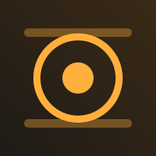

何気ない日常を、2秒・3秒ずつ。
Log で撮って、映画のような色に仕上げる iPhone カメラ。
シャッターを押すだけで2秒・3秒のクリップを撮影。その日のクリップは自動で1本のフィルムにつながり、毎日が短い映画になります。通常の録画や、押している間だけ撮る長押しモードもあります。
iPhone 15 Pro 以降は Apple Log、その他の機種でもフラットな Log プロファイルで記録します。ProRes ではなく汎用的な MP4（HEVC 10bit）なので、容量を気にせず撮れます。
エモい、シネマティック、セピア、白黒など、映画のようなルックをファインダーで確かめながら撮影できます。ルックはクリップと一緒に保存され、あとから何度でも変えられます。
シャッター角度・ISO・ホワイトバランス・ティント・マニュアルフォーカスを直接操作。ヒストグラム、ゼブラ、フォルスカラー、フォーカスピーキング、水平器で露出とピントを確かめられます。
カラー編集では、ルックや露出・コントラスト・彩度・色温度・グレイン・ビネットを、フィルム全体にまとめて、またはクリップごとに調整できます。グレードのコピー＆ペーストにも対応。
仕上がった色でフィルムを MP4 に書き出し、写真アプリへの保存や共有ができます。撮影素材は iPhone 内に保存され、iCloud Drive へのバックアップにも対応しています。
無料で使えます。 無料版では基本の 5 種類のルックと 1080p / 30fps までの撮影ができ、一部の画面に広告が表示されます。
| 月額プラン | 広告の非表示、すべてのルック、.cube LUT の読み込み、4K・60/120fps での撮影 |
|---|---|
| 年額プラン | 月額プランと同じ内容を 1 年単位で |
| 買い切り | 同じ内容をずっと。更新はありません |
価格はお住まいの国・地域によって異なります。最新の価格はアプリ内、または App Store でご確認ください。
ご質問・不具合のご報告は nao22c@icloud.com までお送りください。数日以内に返信いたします。
English documents are available on the Privacy Policy, Terms of Use and Support pages.